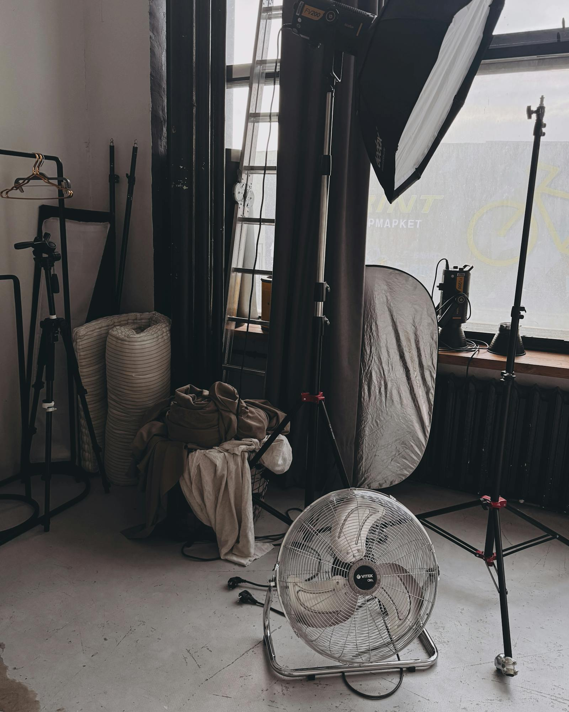
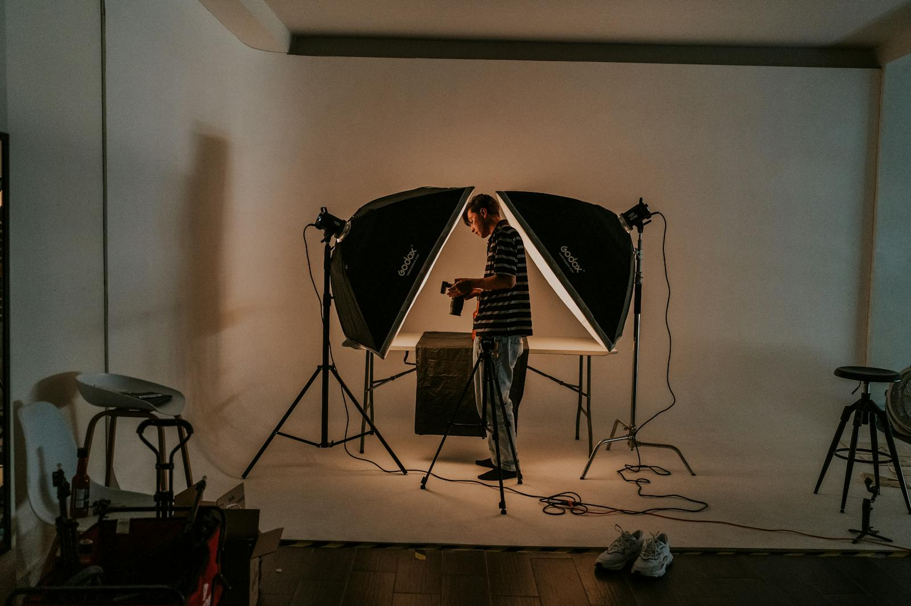
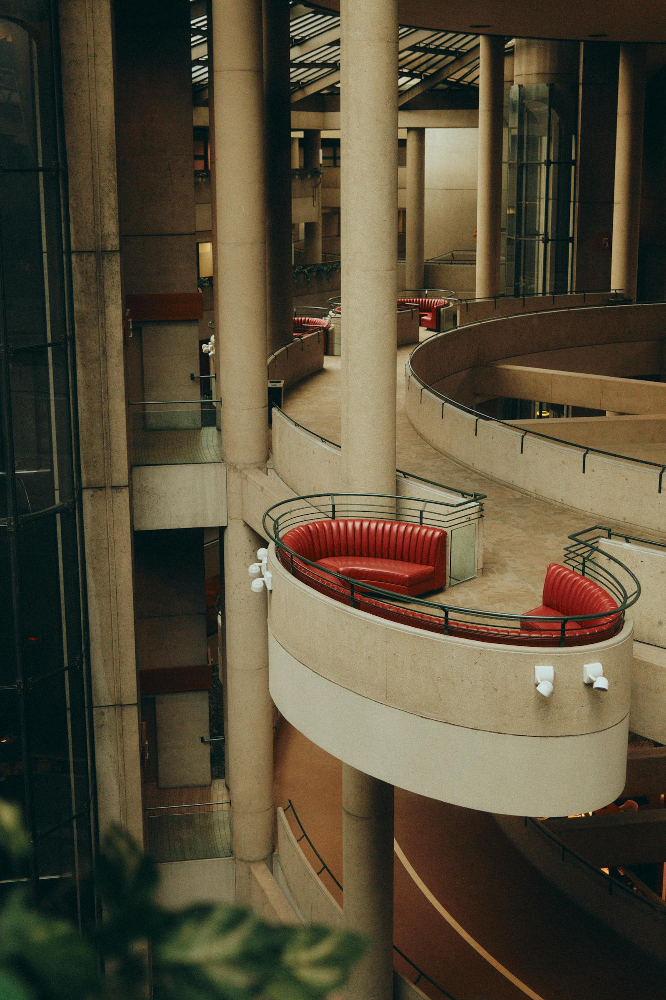
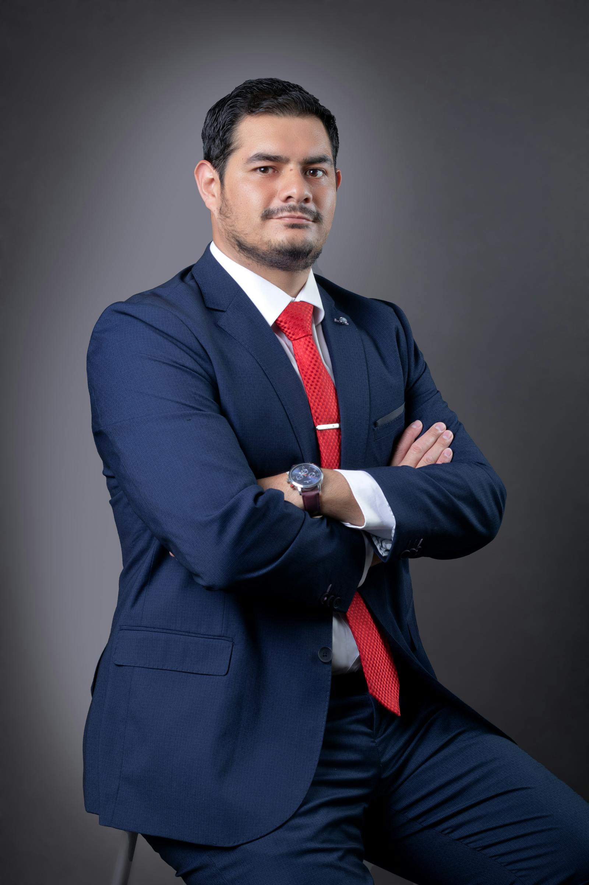
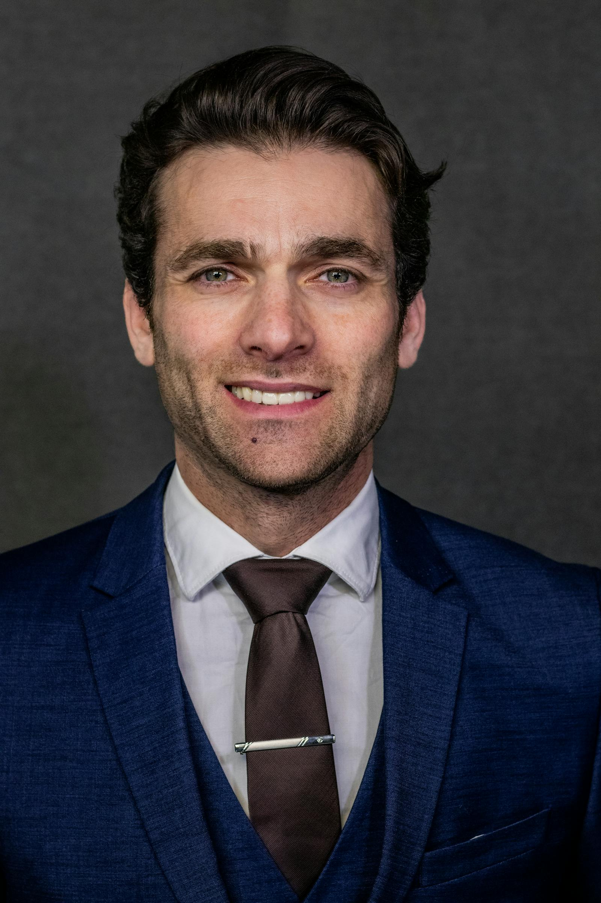
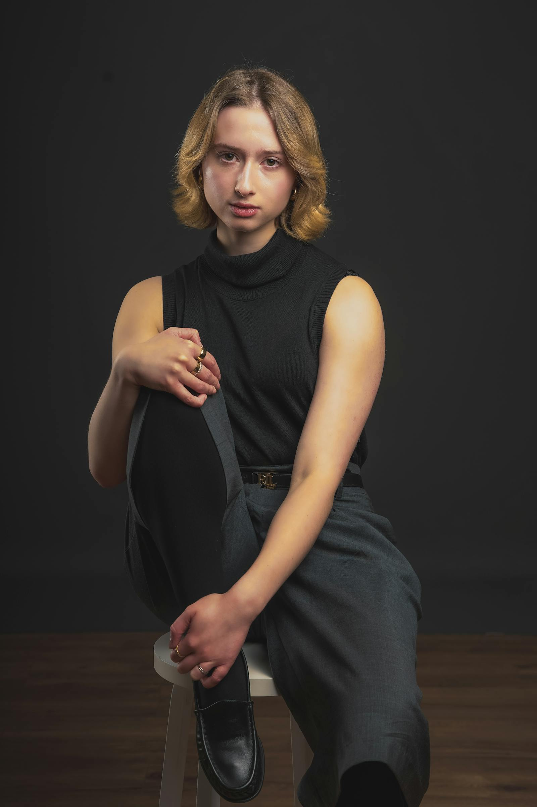
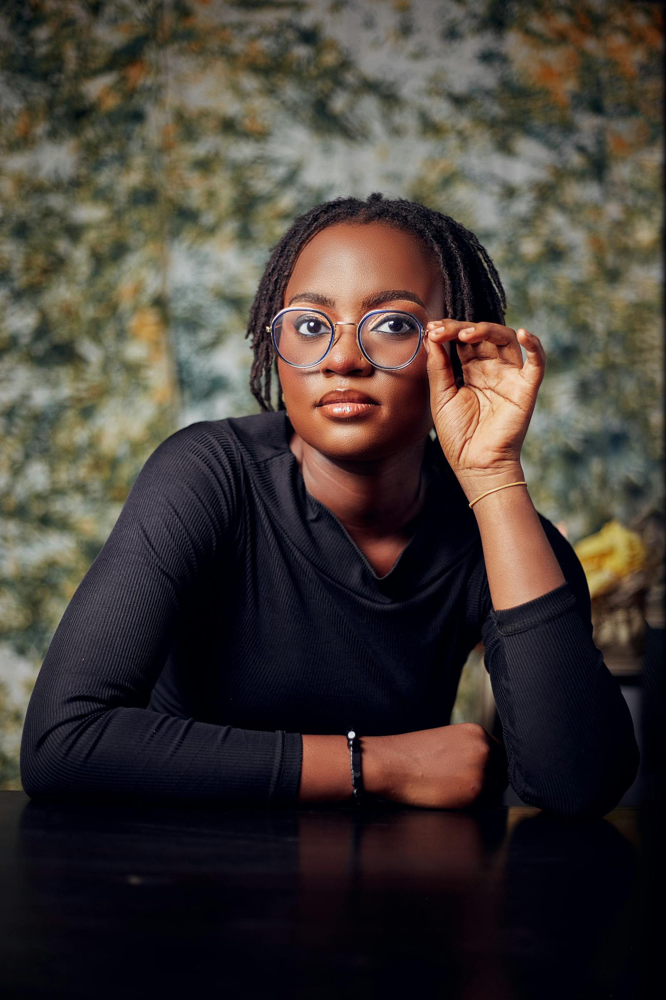

Daylight first.
If natural light can do it, we use natural light. Supplement only when the brief genuinely needs the supplement.
Brivon is a small commercial photography studio — eight people on staff, two rooms (Brooklyn and Berlin), one in-house retoucher who has worked the entire archive since 2017. We work slower than the average rate card and we keep the same producer on a brand from first call to final delivery.

The studio started in October 2014 as a working group of three — Mira Halden, Joon Park, and Tomas Brivón — sharing a 90-square-metre loft in Williamsburg that we had borrowed for the autumn from a friend who had gone to film a documentary in Patagonia. We took on twelve projects that first quarter and lost money on five of them. We kept going because the projects we were turning down were starting to ask twice.
The first studio rule we ever wrote down: never ship a frame we would not hang. — Mira Halden, founder
The name "Brivon" comes from Tomas Brivón's family — a small printing shop his grandparents ran in Lisbon in the 1950s. The shop is gone, but the discipline carried. The studio's house style — careful colour, considered light, paper-first thinking — is a direct inheritance from that shop, even though the work itself is contemporary.
The studio is privately held; we have never taken outside investment, never sold a percentage to an agency, and we expect to remain owner-operated for the foreseeable future. We are eight people. We intend to stay eight people.
These are not aspirations — they are the constraints that have shaped every shoot we have produced. Most studios learn these the hard way after a few years. We wrote them down in 2015 and have not relaxed any of them since.
If natural light can do it, we use natural light. Supplement only when the brief genuinely needs the supplement.
From capture to print. ICC-profiled. Calibrated monitors. A real print proof for any campaign that lands on paper.
The same person from the first call to the final delivery. Continuity is the cheapest quality lever a studio has.
Done in-house. Treated as part of the creative decision, never outsourced to a post house that has not seen the brief.
Almost always the one. We shoot enough of every setup to find it; we never settle on the first or the safest.
The first rule we ever wrote down. We have killed projects in post that we could have shipped — and we have not regretted it.
The Brooklyn room sits in a converted printers' building in Greenpoint, a five-minute walk from the G train. Four-and-a-half-metre ceilings, true north light, a working kitchen for food work, two pre-rigged grid points, and enough corner storage for three full backdrop libraries. The room is available to outside crews for ten weeks of the year — contact the studio if you would like to enquire.

Greenpoint · NYCThe Berlin room opened in 2018 — a calmer, smaller space on a Mitte ground floor with south-facing windows that give us a warmer, slower light than Brooklyn. Polished concrete, exposed concrete columns, a single 3.6-metre roll-down, and a quiet street that we can close to traffic for outdoor stills. We use it primarily for editorial portraiture, product still life, and any project that benefits from the slower European pace.

Mitte · BerlinThe producer and the lead photographer assigned to your project are the two people you will speak to most. The retoucher, the studio manager, and the production assistant are visible through the pipeline but stay off the brand-side calls unless invited.




We are currently hiring a junior producer based in Berlin and a freelance digital tech for the Brooklyn room. Brand-side enquiries take ten to fourteen days for a reply; hiring enquiries take four to seven.